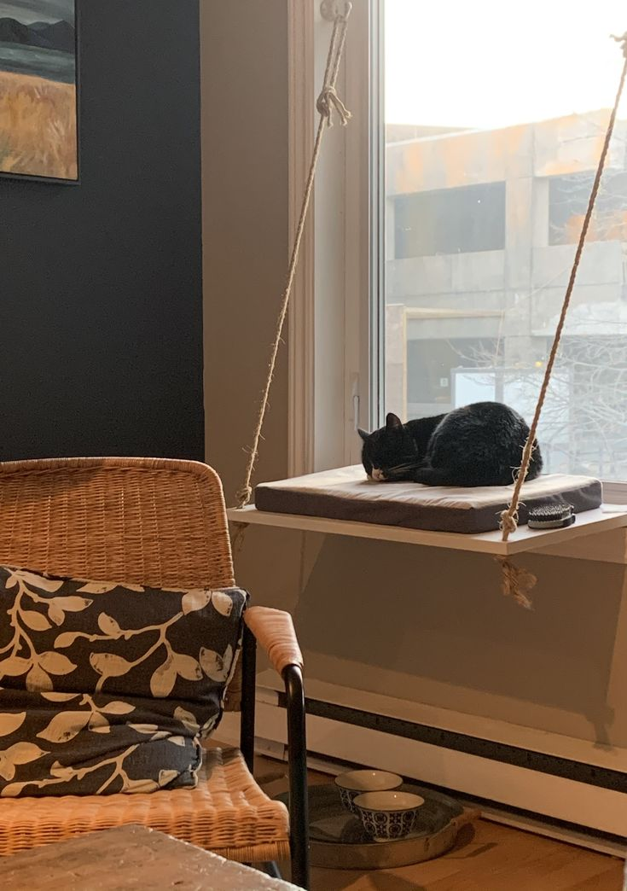
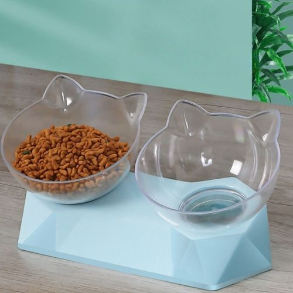
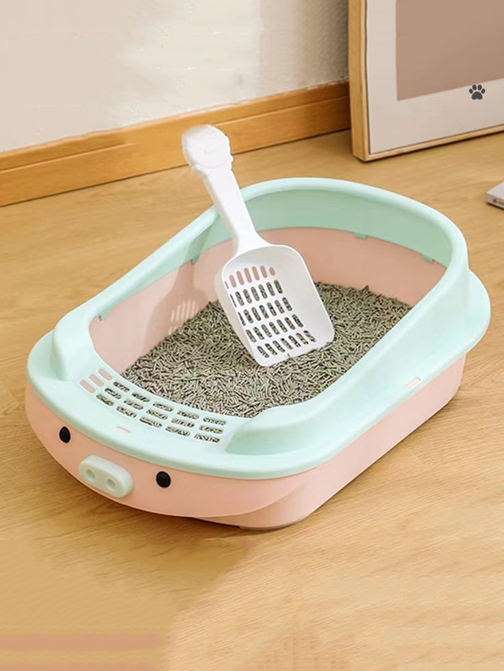
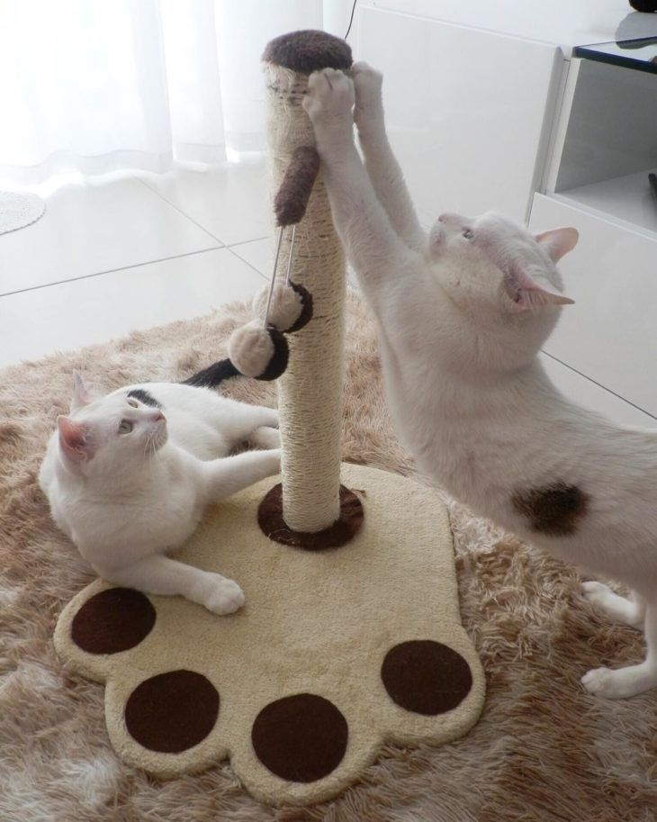
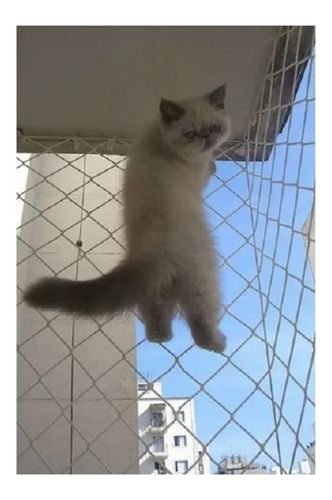
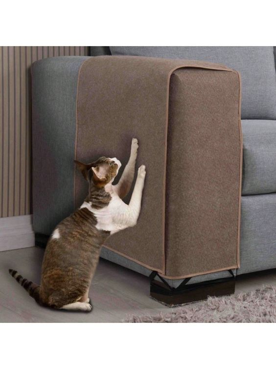

Ideias do que comprar
Confira:






Como os gatos demonstram seu amor?
Há quem diga que eles são desapegados, mas quem tem um gatinho em casa sabe que não é bem assim.
Eles são tão especiais que mostram para seus tutores todos os dias o quanto são felizes por serem seus
bichinhos de estimação.
Basta entender a sua linguagem!